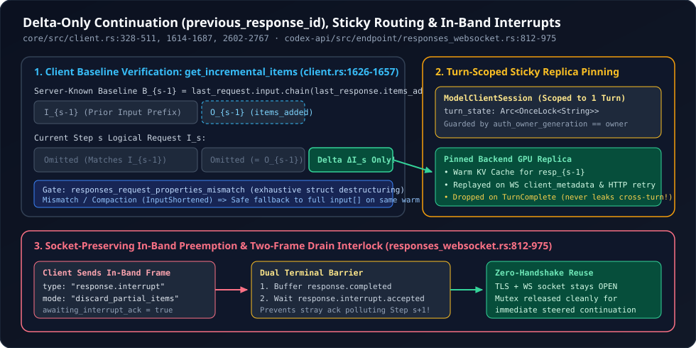

3. Delta-Only Turn Continuation (previous_response_id), x-codex-turn-state Sticky Routing & In-Band Interrupts
Keeping a WebSocket open and prewarming Turn 1 solves startup latency—but what happens across Steps $2, 3, \dots, 40$ of a deep debugging loop when tool outputs stream back, user permissions change mid-turn, background subagents inject results, or the user hits Esc to steer? Sending incremental deltas safely requires proving mathematically that the client’s prefix matches what the server already holds, pinning every intra-turn retry to the exact GPU replica holding the warm KV state, and cancelling active generations in-band without poisoning the shared socket. Here is how core/src/client.rs and codex-api/src/endpoint/responses_websocket.rs engineer all three.
1. The Server-Known Baseline Invariant ($B_{s-1} = I_{s-1} \mathbin{\Vert} O_{s-1}$)
Suppose Step $s-1$ sent logical input array $I_{s-1}$ and the model streamed back output items $O_{s-1}$ (reasoning blocks, assistant messages, and tool calls), finishing with ResponseEvent::Completed { response_id }. Inside map_response_events (client.rs:2705-2753), Codex records every post-interceptor OutputItemDone(item) into items_added and ships LastResponse { response_id, items_added } back to WebsocketSession over a oneshot channel the instant Completed arrives.
On Step $s$, the server already associates response_id with the concatenated sequence $B_{s-1} = I_{s-1} \mathbin{\Vert} O_{s-1}$. Therefore, Codex can transmit a delta-only continuation if and only if two invariants hold:

client.rs and responses_websocket.rs: client-side baseline prefix verification ($I_{s-1} \mathbin{\Vert} O_{s-1}$), turn-scoped x-codex-turn-state sticky routing, and dual-frame draining on in-band response.interrupt.Read ModelClientSession::get_incremental_items (client.rs:1626-1657) to see how concise this proof check is in Rust:
// codex-rs/core/src/client.rs (lines 1626-1657)
fn get_incremental_items(
&self,
request: &ResponsesApiRequest,
last_response: &LastResponse,
) -> std::result::Result<Vec<ResponseItem>, NonIncrementalReason> {
let previous_request = self
.websocket_session
.last_request
.as_ref()
.ok_or(NonIncrementalReason::NoPreviousRequest)?;
if let Some(reason) = responses_request_properties_mismatch(previous_request, request) {
return Err(NonIncrementalReason::RequestPropertyChanged { reason });
}
let response_items = &last_response.items_added;
let previous_items = previous_request.input.iter().chain(response_items);
let mut current_items = request.input.iter();
for previous in previous_items {
let Some(current) = current_items.next() else {
return Err(NonIncrementalReason::InputShortened {
previous: previous.item_type(),
});
};
if !response_items_equal_ignoring_internal_metadata(previous, current) {
return Err(NonIncrementalReason::InputMismatch {
previous: previous.item_type(),
current: current.item_type(),
});
}
}
Ok(current_items.cloned().collect())
}2. Compile-Time Exhaustive Property Diffing & Late-Metadata Guards
Why didn’t OpenAI just derive PartialEq on ResponsesApiRequest? Look closely at responses_request_properties_mismatch (client.rs:420-491):
// codex-rs/core/src/client.rs (lines 420-444, condensed)
// This is intentionally not a `PartialEq` implementation: request equality includes `input` and
// `client_metadata`, while websocket reuse compares input and late tool-result metadata separately.
// Access programs are authorized per response, including continuations, without replaying input.
// Keep the destructuring exhaustive so new request fields require an explicit reuse decision.
fn responses_request_properties_mismatch(
previous: &ResponsesApiRequest,
current: &ResponsesApiRequest,
) -> Option<&'static str> {
let ResponsesApiRequest {
model: previous_model,
input: _,
tools: previous_tools,
tool_choice: previous_tool_choice,
parallel_tool_calls: previous_parallel_tool_calls,
reasoning: previous_reasoning,
store: previous_store,
stream: previous_stream,
stream_options: _,
include: previous_include,
service_tier: previous_service_tier,
prompt_cache_key: previous_prompt_cache_key,
text: previous_text,
client_metadata: _,
access_programs: _,
} = previous;
// ... compares the 11 context-affecting fields and returns bounded &'static str telemetry labels
}Two subtle bugs are prevented right here:
- Exhaustive Struct Destructuring (No
..Wildcard): Four fields—input,stream_options,client_metadata, andaccess_programs—can legitimately vary per step without invalidatingprevious_response_id, whereas eleven fields (model,tools,reasoning,service_tier, etc.) alter server interpretation of the prefix. By destructuringResponsesApiRequestwithout.., Rust’s compiler forces every future engineer who adds a field toResponsesApiRequestto explicitly classify whether that field invalidates delta continuations! - Late Tool-Result Metadata vs. Internal Passthrough Metadata (
client.rs:493-511): Codex attaches internal UI/chat metadata toResponseItems that is stripped on the wire, soresponse_items_equal_ignoring_internal_metadataclearsinternal_chat_message_metadata_passthroughbefore comparing items. However, it checksprevious.has_same_tool_result_metadata(current)first: if a late tool completion retroactively updates an already-sent output item, a pure tail delta $\Delta I_s$ cannot patch $B_{s-1}$ in place—so returningfalsetriggers a clean full-array resend on the same open WebSocket! Similarly, when context compaction shrinks history,NonIncrementalReason::InputShortenedseamlessly sends the new compacted prefix without reconnecting.
3. Turn-Scoped x-codex-turn-state Sticky Routing
Why does Codex maintain both prompt_cache_key (thread-scoped) and x-codex-turn-state (turn-scoped)? Because in a distributed LLM inference cluster, prompt_cache_key is a client-chosen consistent-hashing hint across turns, whereas x-codex-turn-state is a server-minted opaque routing token that pins all requests within a single active turn—including transient network retries, 60-minute WebSocket rotations, and HTTP SSE fallbacks—to the exact backend state and GPU replica holding that turn’s live execution context.
| Invariant | Source Mechanism | Why Violating It Hurts |
|---|---|---|
| Capture Once at Turn Start | turn_state: Arc<OnceLock<String>> populated from HTTP upgrade headers (responses_websocket.rs:626) or in-band event.turn_state() frames (line 915) | OnceLock guarantees lock-free $O(1)$ reads across both WebSocket and HTTP retry paths once the first server frame arrives. |
| Replay Intra-Turn Across Transports | Injected into WebSocket client_metadata["x-codex-turn-state"] (client.rs:2223) and HTTP fallback headers (build_responses_headers, client.rs:2617) | Even if a corporate proxy drops the WebSocket mid-turn and Codex falls back to Zstd HTTP SSE, the retry still lands on the warm GPU replica! |
| Never Replay Cross-Turn | ModelClientSession owns turn_state and is instantiated fresh per turn (client.rs:325-343); only WebsocketSession is parked on drop | Replaying Turn $k$’s x-codex-turn-state into Turn $k+1$ violates the server routing contract and can pin long sessions onto overloaded or draining replicas. |
| Clear on Auth Rotation | turn_state_with_auth_owner checks websocket_session.auth_owner_generation == client.auth_owner_generation() (client.rs:1614-1620) | Prevents a refreshed or switched account credential from replaying routing state belonging to the previous auth principal. |
4. Socket-Preserving In-Band response.interrupt & The Two-Frame Drain Interlock
Over unary HTTP SSE, preempting a streaming generation requires aborting the HTTP body stream—tearing down the TCP/TLS connection and paying a fresh handshake on the steered continuation. Over Responses WebSockets, Codex keeps the connection alive by transmitting an in-band control frame (responses_websocket.rs:812-828):
// codex-rs/codex-api/src/endpoint/responses_websocket.rs (lines 812-828 & 864-891, condensed)
request = &mut interrupt_request, if response_id.is_some() => {
interruption = Some(request);
send_websocket_request(
ws_stream,
serde_json::json!({
"type": "response.interrupt",
"response_id": response_id,
"mode": "discard_partial_items",
}).to_string(),
idle_timeout,
/*telemetry*/ None,
timing_log_context.connection_reused,
).await?;
awaiting_interrupt_ack = matches!(request, ResponseInterrupt::Cancel { .. });
continue;
}Look at the subtle protocol race solved by awaiting_interrupt_ack and completion on lines 864-975 of responses_websocket.rs. Because a WebSocket is full-duplex, the server might already be transmitting response.completed at the exact millisecond the client sends response.interrupt—meaning two terminal frames (response.completed and response.interrupt.accepted) can arrive in either order!
- If the reader loop exited immediately upon seeing
response.completedwhileawaiting_interrupt_ack == true, it would unlock the sharedws_streammutex whileresponse.interrupt.acceptedwas still in flight on the wire—delivering that stale acknowledgement into the nextresponse.createstream! - Instead, line
930buffersResponseEvent::Completedinto*completion = Some(event)and line959checksif awaiting_interrupt_ack { continue; }—holding the socket mutex until both terminal frames are drained (and validatingacknowledgement.response_id == response_idon line875) before releasing the clean socket for immediate reuse!
5. Questions worth answering
NonIncrementalReason variants only store &'static str item types rather than item IDs or diff snippets (client.rs:378-418)?As the comment on line 378 notes, continuation diagnostics feed OpenTelemetry counters and logs: bounding every reason to compile-time &'static str labels avoids both high-cardinality metric explosions and accidental leakage of prompt contents or identifiers into telemetry.
WebsocketSession::reset (client.rs:514-525) preserve continuation_reset_reason across reconnects and turns until the next send?After a socket reconnect, per-socket server metrics would otherwise classify the next full payload as a normal "initial" send on a new socket, hiding why incremental continuation was lost (e.g., 60-minute limit vs. stream error). Retaining continuation_reset_reason tags the very next request with the true root cause.